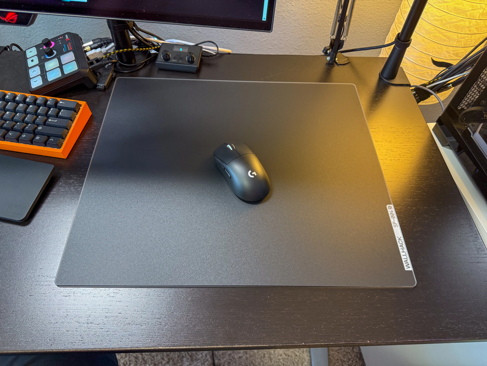

So far, this glass mousepad has done everything I need it to do.
It might sound a little crazy, but the main reason I got this mousepad is because of how easy it is to clean. A traditional mousepad is a magnet for dust and grime, which I have found to seriously affect the consistency of my aim. A glass mousepad is extremely easy to wipe off with a microfiber cloth, and I always keep a few handy next to my desk.
The base of this mousepad is great—it does not move around at all and will not damage the desk.
I do think that the "performance" of a glass mousepad is overrated and that the skates on your mouse itself have a larger effect on the speed and friction while moving your mouse.
One annoyance that I have heard other people talk about, and that I agree with, is how loud it is when swiping with your mouse. It may seem ridiculous to complain about the sound of a $120 mousepad, but with open-back headphones, it is loud enough to cover up some important but quiet footsteps in Counter-Strike.
Overall, I think that this mousepad was worth the high price because of its easy-to-clean surface, and it shouldn't need to be replaced as often as a traditional mousepad.